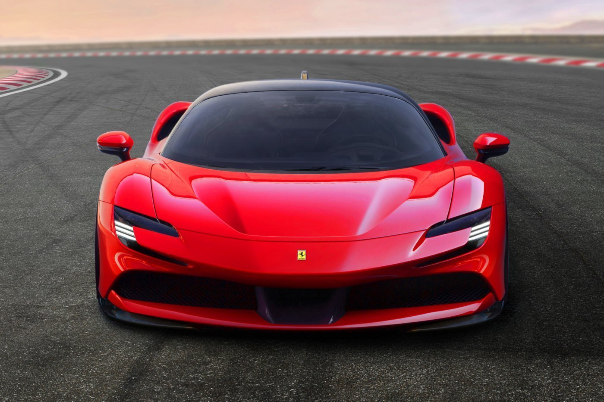
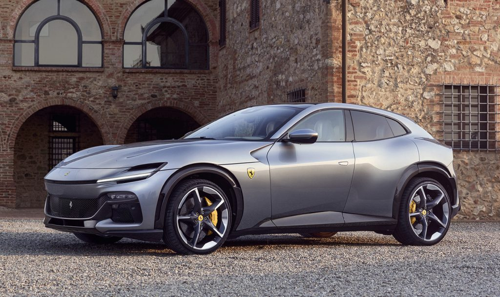
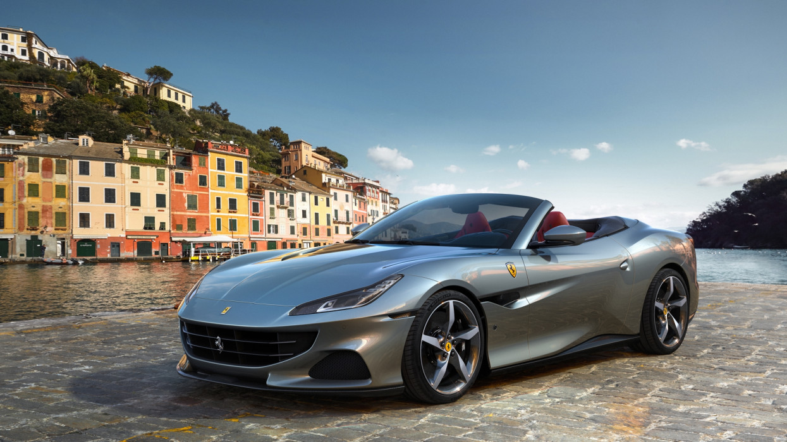
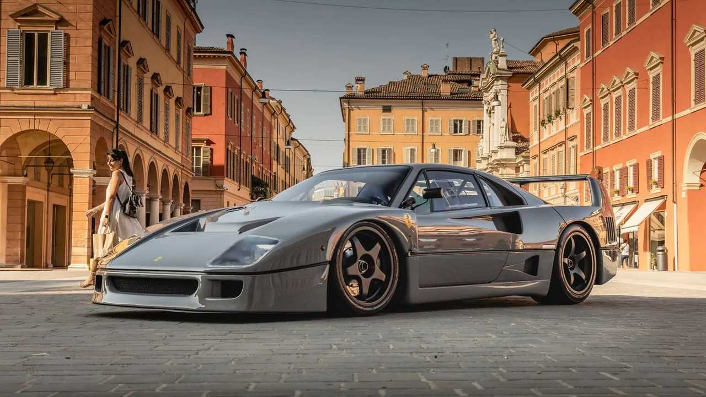
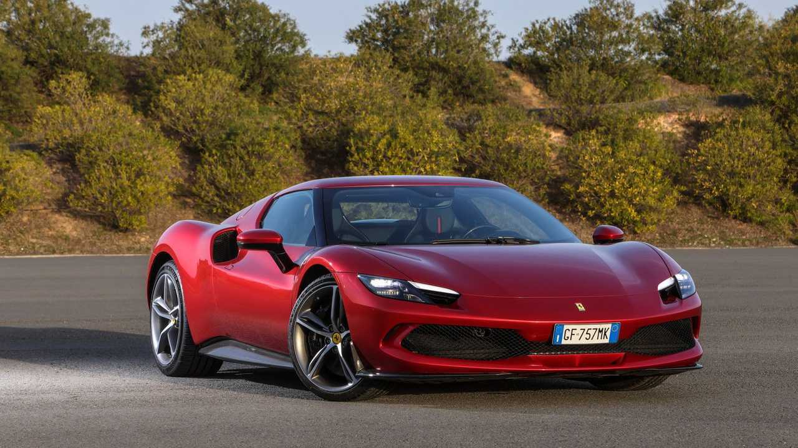
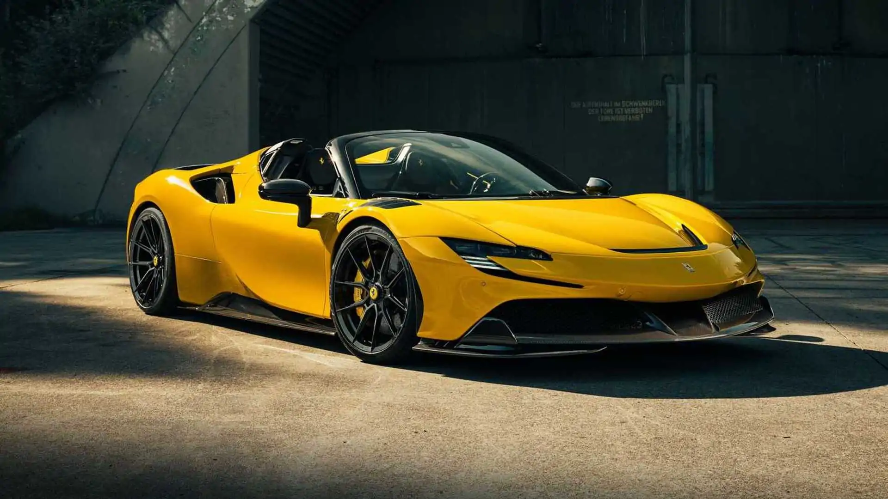

Hírek és csodák a Ferrari világából!
1000 lóerős a plug-in hibrid Ferrari
Ahogy az aktuális Formula-1-es versenyautó is a versenyistálló 90 éves évfordulójára emlékezik a névadással, úgy a Ferrari történetének első, hálózatról tölthető hibrid hajtással szerelt autója is ezt teszi, épp csak egy Stradale, azaz utcai jelzőt is csatoltak az SF90-hez. Az olaszok eddigi történetének legerősebb autója a far-középmotoros V8-as alapra épül, és négy motorból összesen 1000 lóerőt tud a vezető rendelkezésére bocsájtani – amíg az akkumulátor bírja szusszal.
Ferrari Purosangue
A Ferrari Purosangue a Ferrari történetének első négyajtós, négyüléses autója, de a két hátsó üléses modellek már a kezdetek óta jelentős szerepet játszanak a cég stratégiájában. Most, a 75 éves élvonalbeli kutatás csúcspontjaként a Ferrari egy egyedülálló autót hozott létre és az ágaskodó ló DNS-ének beágyazását, ahol a teljesítmény, a vezetési élmény és a kényelem tökéletes harmóniában élnek együtt. És ezért hívták ezt az új modellt Ferrari Purosangue - olaszul telivérnek.
Ferrari Portofino
A Ferrari Portofino M, amely a nevében a Modificata legendás „M” utótagját tartalmazza, a Ferrari Portofino evolúciója. Az új Prancing Horse 2+ pók egy csomó új műszaki és formai jellemzővel büszkélkedhet, amelyek közül a legjelentősebb a 8 sebességes duplakuplungos sebességváltó és az ötállású Manettino, ami abszolút első a Ferrari GT kabrióban. A Ferrari Portofino M fedélzetén minden utazás egy (újra)felfedező utazás.
Enzo Ferrari

Az Enzo Ferrari egy tizenkét hengeres, középmotoros sportautó, melyet 2002-ben mutattak be. Nevét a gyár alapítójától, Enzo Ferrariról kapta. Építése során Formula-1-es technológiát is használtak, például a sebességváltó vagy a fékek esetében. Az F-1-es tapasztalatok felfedezhetőek az autó orrának kialakításában is, mely rendkívül szögletes. Az autó karosszériája is különleges, ugyanis szénszálas műanyagból készült. Az Enzóból mindössze 400 darabot gyártottak, és ezekből is csak a Ferrari által kiválasztott törzsvevők vásárolhattak.
Harmadik hely a Ferrari 499P-nek Spa-ban

A 6 órás Spa-Francorchamps, az FIA WEC harmadik fordulója azzal ért véget, hogy az Alessandro Pier Guidi, James Calado és Antonio Giovinazzi legénységgel szerelt Ferrari 499P megszerezte első dobogós helyét a Hypercar osztályban. Ezzel szemben Antonio Fuoco, Miguel Molina és Nicklas Nielsen autójának ki kellett állnia egy baleset következtében, amelyből az olasz pilóta sértetlenül, kevesebb mint két órával a kockás zászló előtt került ki.
Hó szórakozás

Semmit sem lehet a véletlenre bízni egy olyan sztár első nyilvános fellépésénél, aki nem hajlandó beilleszkedni a többiek közé. Így a Purosangue úgy döntött, hogy próbára teszi magát az újságírókkal és a nagyközönség figyelmes szemével Madonna di Campiglióban, az olaszországi Trentino csodálatos hegyeiben. Idilli helyszín – rendkívül kifinomult hegyi környezetben –, hogy megmutassa egyedi szépségét, ugyanakkor megerősítse sokrétű egyéniségét az igényes, hóval borított utak környezetben. A The Official Ferrari Magazine két tesztelője egyformán kivételes volt: Andrea Bertolini, aki 10 nemzetközi GT-címet szerzett, plusz 33 évet a Ferrari gyári pilótájaként – és Lilou Wadoux 21 évesen, a Ferrari Competizioni GT első hivatalos női pilótája. , debütálhat egy 296 GT3 volánjánál Sebringben.
A Ferrari rövid története
The History of Ferrari
Enzo Ferrari 1908-ban, tíz évesen döntött úgy, hogy versenyezni kezd: ennek érdekében végül 1919-ben autóversenyzői pályafutásba kezdett. Az 1920-as években az Alfa Romeónál dolgozott , mindketten pilótaként különböző helyi versenyeken és alkalmazottként a milánói értékesítési raktárában. 1929-ben azonban szakított ezzel a munkával, hogy megalapítsa és irányítsa saját versenycsapatát: a Scuderia Ferrarit . Az úri sofőrök és más amatőrök ruházatának szánt csapatot egy helyi banktól kapott millió líra kölcsönből alapították, a gazdag amatőr versenyző, Mario Tadini, Augusto és Alfredo Caniato – a textiliparban tevékenykedő két testvér – további támogatásával. Az abroncsgyártó cég Pirelli . Székhelye Modena , Enzo szülővárosa.
Ferrari márkák
Ferrari F40
| Jellemző | Érték |
|---|---|
| Űrtartalom | 2936 cm3 |
| Ár | 1.800.000 $ |
Ferrari Enzo

| Jellemző | Érték |
|---|---|
| Űrtartalom | 5980 cm3 |
| Ár | 3.000.000 $ |
Ferrari Roma

| Jellemző | Érték |
|---|---|
| Űrtartalom | 3800 cm3 |
| Ár | 290.000 $ |
Ferrari 812 GTS

| Jellemző | Érték |
|---|---|
| Űrtartalom | 6496 cm3 |
| Ár | 433.765 $ |
Ferrari 296 GTB
| Jellemző | Érték |
|---|---|
| Űrtartalom | 2992 cm3 |
| Ár | 322.986 $ |
Ferrari SF90
| Jellemző | Érték |
|---|---|
| Űrtartalom | 3.990 cm3 |
| Ár | 528.000 $ |
A képek és infók a következő oldalról származnak: https://www.ferrari.com